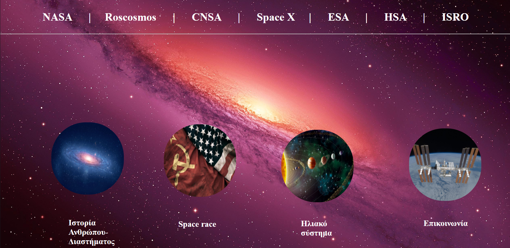
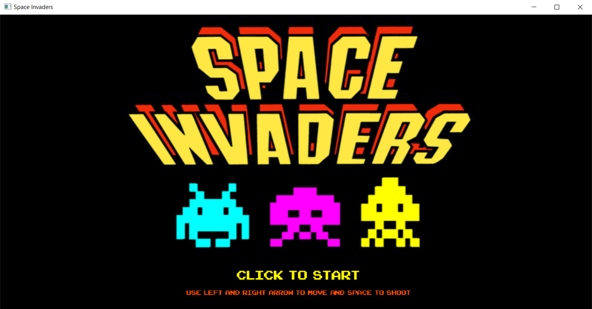
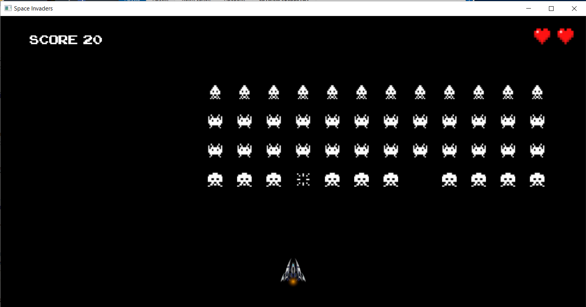

Κάτα την διάρκεια της φοίτησης μου έχει χρειαστεί στα περισσότερα μαθήματα να εκπονήσω διάφορες εργασίες και παρακάτω γίνεται μια σύντομη περιγραφή μειρκών από αυτών
5. HTML and CSS Project (Εισαγωγή στην Επιστήμη των Υπολογιστών)
Στο μάθημα Εισαγωγή στην Επιστήμη των Υπολογιστών είχαμε την δυνατότητα να φτιάξουμε μια ιστοσελίδα και να επιλέξουμε εμείς οι ίδιοι το θέμα. Η συγκεκριμένη εργασία ήταν ομαδική (2 άτομα) και παρακάτω φαίνεται το site το οποίο φτιάξαμε και είχε ως θέμα το διάστημα και διάφορα ιστορικά γεγονότα τα οποία οδήγησαν τους ανθρώπους να φτάσουν στο φεγγάρι.

4. Δημιουργία Βάσης Δεδομένων Βίντεοκλαμπ (Προγραμματισμός Υπολογιστών με Java)
Στο πλαίσιο του μαθήματος Προγραμματισμός Υπολογιστών με Java είχαμε την ευκαιρία να φτιάξουμε μια βάση δεδομένων στην οποία αποθηκεύονταν στοιχεία που αφορούσαν ένα βίντεοκλαμπ. Η εργασία αυτή ήταν ομαδική (2 άτομα) και με βοήθησε να εξοικειωθώ στην γλώσσα προγραμματισμού Java.
3. Εύρεση Εξόδου σε Λαβύρινθο (Δομές Δεδομένων)
Στο μάθημα δομές δεδομένων μας δώθηκε η ευκαιρία να γράψουμε ένα πρόγραμμα το οποίο έβρικε την έξοδο (αν υπήρχε) καθώς και το μονοπάτι σε ένα λαβύρινθο. Η εργασία αυτή ήταν ομαδική (2 άτομα) και με βοήθησε στην χρήση δομών δεδομένων καθώς και να μάθω καλύτερα Java.
4. Multi-Threaded Pizzeria (Λειτουργικά Συστήματα)
Στο μάθημα Λειτουργικά Συστήματα είχαμε την δυνατότητα να κάνουμε μια εργασία την οποία την υλοποιήσαμε σε λειτουργικό σύστημα Linux και χρησιμοποιήσαμε νήματα. Το θέμα της εργασίας ήταν να φτιάξουμε ενα πρόγραμμα στο οποίο κάναμε προσομοίωση μιας πιτσαρίας. Η εργασία αυτή ήταν ομαδική (2 άτομα) και με βοήθησε στο να καταλάβω πως λειτουργεί ο πολυνηματικός προγραμματισμός.
5. Space Invaders (Προγραμματισμός Υπολογιστών με C++)
Στο μάθημα Προγραμματισμός Υπολογιστών με C++ μέσα από μια εργασία η οποία ήταν ομαδική μας δώθηκε η δυνατότητα να φτιάξουμε ένα παιχνίδι. Εγώ επέλεξα να φτιάξω το Space Invaders και ήταν σίγουρα η πιο ενδιαφέρον εργασία την οποία έχω κάνει. Με βοήθησε στο να εξοικειωθώ στην γλώσσα προγραμματισμού C++. Ακολουοθούν 2 φωτογραφίες από το παιχνίδι που έφτιαξα

